Climbing
Climbing The famous African mountain Kilimanjaro is a volcano. Every volcano has a crater, and Kilimanjaro has two. Inside the main crater, there is a smaller one named after Richard Reusch.
Most climbers who join an expedition to Kilimanjaro reach the main peak, Uhuru. Only about 300 people descend into the crater out of approximately 50,000 embarking on the climb. Even fewer look into the inner Reusch Crater. This interesting feature of Kilimanjaro's volcanic history can be called a hidden gem on the "roof of Africa."
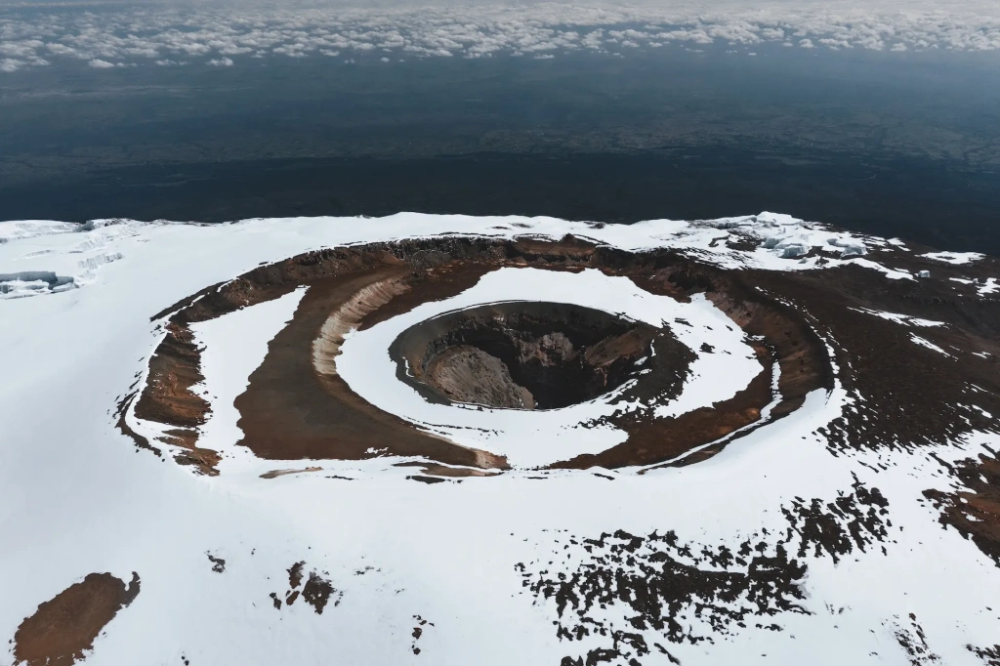
In this article, we answer the following questions:
- What is Reusch Crater?
- Who was Gustav Otto Richard Reusch?
- Why was the inner crater of Kilimanjaro named after him?
- How can you visit Reusch Crater?
Kilimanjaro craters
Kilimanjaro is the largest volcano formed at the edge of the East African Rift. Here, one tectonic plate is slowly separating from another. This process creates deep valleys and mountains and volcanoes on the edges. The valleys fill with water, forming the Great African Lakes: the largest on the continent – Lake Victoria, the deepest – Tanganyika, and many smaller ones.
Kilimanjaro is the highest and most famous mountain in the region, consisting of three volcanic cones that together form a single massif. Mount Kilimanjaro's peaks or cones listed from west to east, are Shira, Kibo, and Mawenzi. Kibo Peak is the tallest of the three, and Uhuru Peak on Kibo's crater rim is the highest point in Africa.
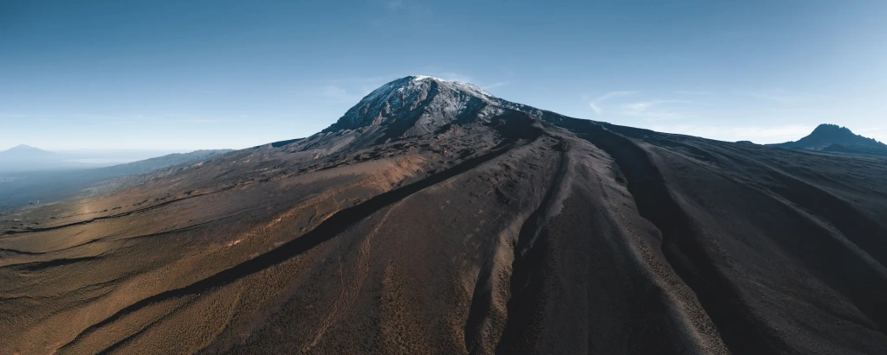
Kibo Crater
The Kibo volcano is topped with a picturesque crater. You might have seen some awe-inspiring pictures of this iconic location. Standing on the edge of Kibo and admiring the panorama below is one of the highlights of a Kilimanjaro expedition. And those who descend into the crater or even stay there overnight get to experience even more.
offers an exhilarating adventure, where you can spend a night at Kilimanjaro's summit. The camp is situated above the clouds, under a star-studded sky. This surreal experience is unforgettable, with snow blanketing the ground, and temperatures around -15 °C (5 °F). The tropical forests and warm African savannas are far below, awaiting your return.
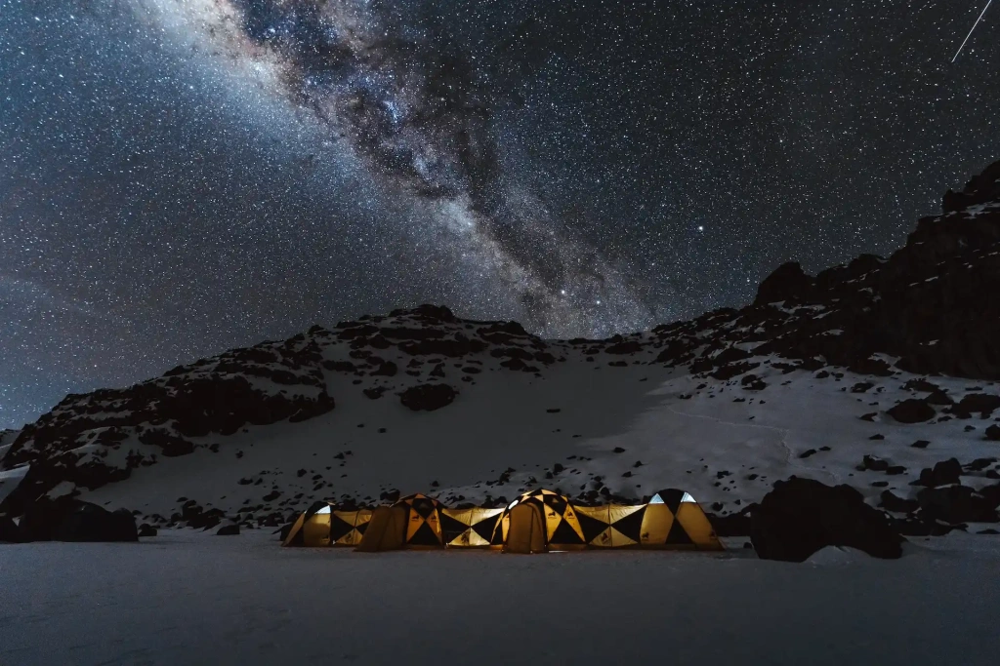
The Kibo Crater is an elongated circle, approximately 2.5 kilometers (1.55 miles) in diameter. Uhuru Peak, the main peak of Kilimanjaro, is the highest point on the crater's wall. The heights of the walls range from 120 to 350 meters (394 to 1,148 feet).
Temperatures in the crater typically range from -15 °C to +5 °C (5 °F to 41 °F). At night, they often drop below -10 °C (14 °F), especially in the and during strong winds. Daytime temperatures can rise above 0 degrees Celsius (32 °F).
Essentially, the main volcanic crater of Kilimanjaro consists of three concentric craters: Kibo, Inner Cone, and the third crater called Reusch Crater.
Reusch Crater
In the large Kibo Crater, sometimes referred to as a due to its size, lies an Inner Cone, and within it, the innermost Reusch Crater. This area also hosts several glaciers, with the Furtwangler Glacier being the most renowned due to its proximity to Uhuru Peak. Those who find the strength after conquering the summit to visit the glaciers typically trek to see it.
The Reusch Crater measures 820 meters (0.51 miles) in diameter, and its walls are not as high as the main crater's, not exceeding one hundred meters (328 feet).
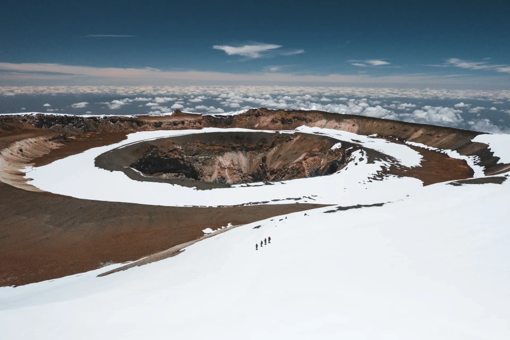
Why is the Reusch Crater considered hidden? It is not visible from Uhuru Peak, the point where most climbers aiming for the top of Kilimanjaro reach.
Inside the Reusch Crater is another intriguing feature. Approaching its center, you can observe a pit approximately 200 meters (656 feet) deep, known as the Ash Pit. This name suggests the presence of volcanic ash remnants. However, "Ash Pit" more accurately refers to the surname of the scientist, J.H. Ash, who studied the inner Kibo Crater in 1943. This naming can be confusing due to the semantic overlap with the word "ash."
Is it possible to peek into and descend into the Ash Pit? Yes, it has a bottom, and there is no heat emanation, only the scent of sulfur vapors. A sloping channel at a 45° angle from the north side leads into it. However, the temperature measured by a probe 30 centimeters (12 inches) below the crater floor is 78.5 °C (173.3 °F). Snow never remains in the Ash Pit, melting immediately after falling. Kibo Volcano is considered dormant, not extinct, though it has shown no signs of activity since monitoring began.
The inner crater was named after Richard Reusch in 1954. Let’s explore who Reusch was and why he earned this honor.
Richard Reusch
Gustav Otto Richard Reusch was a German born in the Russian Empire in 1891. Later, he lived for a long time near the Kilimanjaro volcano, periodically going on expeditions to the mountain. In 1954, Edward Twining, the governor of Tanganyika, which was then managed by the British, decided to award Richard Reusch a medal. The reason was his 25 successful ascents to the summit of Kilimanjaro. At the same time, it was decided to name the inner crater of the Kibo volcano after him.
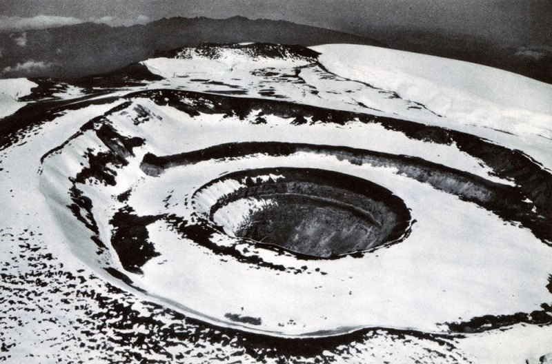
Who was this climber called Reusch? Why did he climb the "roof of Africa" so many times? By the way, besides the 25 successful climbs, there were also partial ascents — in total, he made at least 40 attempts. Some sources mention 65 expeditions. It seems that it was for this reason that he received the nickname "Son of Kibo" from the locals.
Richard Reusch went down in history not only as a multiple conqueror of Mount Kilimanjaro. If you have heard the story about the frozen leopard found in the snows high on the mountain, then you now know the author of this amazing find. It was this incident that Ernest Hemingway described in his story "The Snows of Kilimanjaro." Reusch discovered the frozen carcass of the animal on his very first expedition in 1926.
If you ask the local residents of the Kilimanjaro region, especially the older ones, you will find that they remember Richard Reusch as a missionary and preacher of the Lutheran mission. He is remembered as a compassionate Christian, always ready to help. His pastoral and teaching activities were Reusch's main occupation, while mountain expeditions were more of a hobby. It is also known that Richard Reusch was a certified orientalist specializing in Islam and an ethnographer studying the Maasai people.
His biography, as you can see, is quite eventful. Let's take a closer look at his life to understand what kind of person he was.
Richard Gustavovich — a Volga German in the Russian Empire
Richard was born into a family of Germans living in the German Lutheran settlement of Baratayevka (formerly the Bettinger colony) on the Volga in the Russian Empire. Such German settlements were formed in the Russian Volga region in the second half of the 18th century by the decree of Empress Catherine II. The Russian ruler was a native of the ruling German family, so when it came to the colonization of the vacant lands of the Volga region, she invited many German families to settle, giving them preferences. Richard Gustavovich was born in a family with such roots in 1891.
 in Russian. Nearby are neighboring German settlements Glarus (now Georgievka) and Schaffhausen (now Volkovo).")
Later, his family moved to the North Caucasus, where Richard received his education in a cadet corps and a military school. In Vladikavkaz, he developed his first interests, which would stay with him forever. Through constant contact with Muslim locals, he became interested in Islam and learned Arabic. In military school, he took up military mountaineering. Living close to the , with their main peak Elbrus, facilitated the development of this skill.
His father, Gustav Reusch, was a parish school teacher, and he wanted his son to have a theological education. Richard's grandfather also considered a military career too dangerous for the family's eldest heir and leaned towards a calmer ecclesiastical activity. At their insistence, Richard left the army and went to the other end of the vast empire — to the city of Yuryev, to study at the . There he graduated from the Lutheran seminary, which determined his future. In 1917, two consecutive revolutions occurred in Russia, ending the monarchy and leading to the Civil War. As an officer of the White Army, Reusch fought against the Bolshevik Red Army, but when the city of Tartu was lost, he had to seek refuge in Germany and Denmark.
Richard Reusch — missionary in East Africa
In the newly established Soviet Russia, his brother Emil Reusch continued to work as a Lutheran pastor. Richard Reusch chose to take a job with the Evangelical Lutheran Mission in Leipzig, central Germany. This organization was so successful since the late 19th century that it could afford to open missionary stations in regions far from Europe: in India and Africa. All this laid the groundwork for active missionary work, which unfolded in the 1920s and 30s.
Learning English and Swahili, as well as acquiring nursing skills and becoming a nurse, Richard Reusch was sent on missionary work to East Africa. His first place of assignment in 1923 was the city of Arusha in Tanganyika. This was the name of the colonial territory governed by Britain, which later became part of mainland Tanzania after gaining independence.
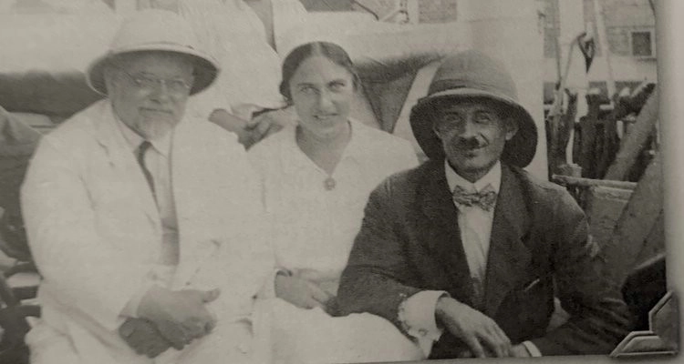
For the next few years, the Lutheran missionary worked in Arusha and Nkoaranga. In 1926, he made his first successful ascent of Kilimanjaro. He reached the summit — the Kaiser Wilhelm Peak, as Uhuru Peak was called then. This made him the who successfully climbed Kilimanjaro. Secondly, in this expedition, Reusch discovered the body of a frozen leopard, which made him famous. In the next expedition, he had the idea to cut off a piece of the animal's ear to demonstrate it as proof of the unusual find. That was a good decision because soon the animal's carcass mysteriously disappeared from the slopes of Kilimanjaro.
The story of the frozen leopard on Kilimanjaro
Members of a previous expedition first reported the leopard, but it is Reusch who is associated with its discovery. It became a sensation at the time, raising many questions, the main one being why the leopard climbed so high. Its body was found at an altitude of about 5,640 meters (18,504 feet), in what was then the permanent snow zone. Today, after a century of observing these animals, we know that the maximum altitude where leopards venture is only 5,200 meters (17,060 feet).

In "The Snows of Kilimanjaro," published ten years later, Hemingway wondered, "No one has explained what the leopard was seeking at that altitude." However, Richard Reusch had his explanation. The fact is that near the leopard, another frozen animal was found — an antelope. Reusch's version is that the antelope was going up in search of fossilized volcanic fragments to lick salt from, and the leopard followed the antelope. They reached an altitude that causes symptoms of altitude sickness in most humans. When an unexpected blizzard began, both animals had nowhere to retreat and died.
Reusch and his companions moved the leopard's carcass to a rock, leaving the antelope's body on the Ratzel Glacier. In the next expedition, Reusch still found the leopard's body, and other climbing groups saw it as well. This place was even marked as Leopard Point. But at some point, Richard Reusch, climbing the mountain once again, found that the bodies of both animals had disappeared.
Reusch as the first tour leader on Kilimanjaro
While living at the foot of Mount Kilimanjaro, Richard Reusch continued his missionary work. In 1927, he was sent to Marangu to head a seminary school for local residents. Marangu is a settlement near the town of Moshi. It was in Marangu that the first expeditions to the summit of Kilimanjaro began. The Marangu Route, also known as the Coca-Cola Route, became the first official route on Kilimanjaro and still has out of all Kilimanjaro routes today.
Living in Marangu, Richard Reusch married an American nurse, Elveda Bonander, who worked as a volunteer in the mission. She bore him three children, and her name is also immortalized on Kilimanjaro. Between Stella Point and Uhuru Peak, at an altitude of 5,890 meters (19,320 feet), there is Elveda Point. This point, not far from the Reusch Crater, is named in honor of the missionary's wife.
An important milestone in the history of ascents of Kilimanjaro was the founding of the Mountain Club of East Africa in 1929. It was organized by Richard Reusch and Clement Gillman, a British geographer and engineer who worked in the African colony as the chief engineer of the Tanganyika Railways. By the way, this person also left his name on Kilimanjaro — at an altitude of 5,681 meters (18,638 feet), there is a sign with the inscription Gilman's Point. A small error — the missing second 'l' in the surname — moves from one sign to another when they are replaced every few years. The sign is placed where the Marangu Route reaches the Kibo Crater. This is the highest point reached by engineer Gillman.
The Mountain Club of East Africa managed three huts built by that time on the Marangu Route at different altitudes. These were the Bismarck Hut, the Peters Hut, and the Kibo Hut. The Club was also responsible for organizing expeditions to Kilimanjaro. Thus, the Club members and the organization itself should be considered the first tour operators working on the "roof of Africa."
The Kilimanjaro Mountain Club
The Mountain Club of East Africa later grew into the Kilimanjaro Mountain Club, established in 1959 and still exists today. Until 1973, the Club continued to manage the huts on the Marangu Route, repairing and rebuilding them until the Kilimanjaro National Park was established by the Tanzanian authorities, taking over this responsibility.
Today, the Club brings together people living in Moshi and the surrounding area who maintain an interest in Mount Kilimanjaro as a cultural object. The Club meets monthly for themed gatherings where guest speakers talk about the history of the volcano and current events related to the region and mountain expeditions. The Club has an extensive archive of historical materials about Kilimanjaro, accumulated since the ascents of Richard Reusch and earlier climbers.
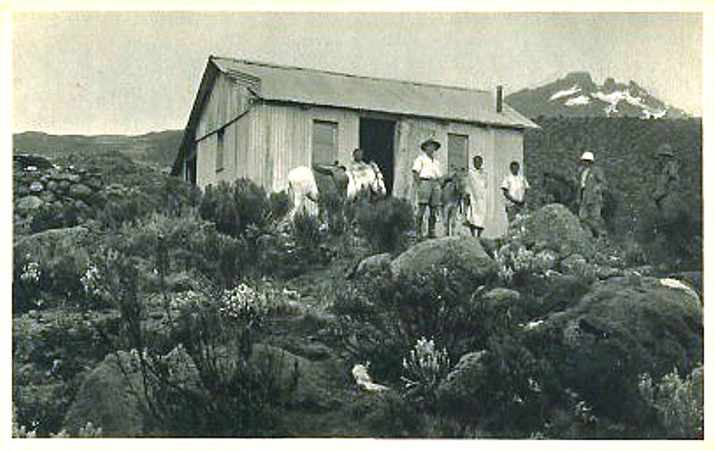
Why can Reusch personally be considered the first tour leader on Kilimanjaro? As we mentioned, he climbed the mountain at least 40 times. Most often, he acted as a guide for groups and individual travelers who wanted to see the snow on the equator with their own eyes. He was fascinated by the nature of Africa's highest mountain and genuinely loved climbing, inspiring and sometimes persuading people to climb the mountain.
For him, it was not only a hobby but also a profitable job. Until 1934, his missionary activities were supported by the Leipzig Mission. But soon after Hitler came to power in Germany, the mission station in Marangu stopped receiving support, as did all overseas German missions. Reusch's income from organizing expeditions allowed him to stay afloat, remaining in Tanganyika. It is also known that he collected butterflies and sold those collections to raise funds.
Richard Reusch — representative of American Lutheranism
In 1937, Reusch moved to the central part of Tanganyika — to Singida, south of Lake Eyasi. There he trained other missionaries and teachers at church schools. Since the Leipzig Mission no longer provided him with work, Richard Reusch joined the American Lutheran Church — the Evangelical Lutheran Augustana Synod. In the following years, he was to unite all the scattered Lutheran missions in East Africa into a single organization, which he headed. He also continued to train new missionaries, preach, and defend the rights of the Maasai, whom the British government tried to evict from their traditional territories. And of course, he continued to go on expeditions to Kilimanjaro.
Let's say a few words about how the local residents treated him. Richard Reusch, as a preacher, was hugely successful — people came from all over, even from other villages, to hear his sermons. He never refused to help, going to homes to pray for the sick and dying. It is also said that he was physically strong and very resilient — he lifted heavy stones by himself during construction. Even today, in the vicinity of Moshi, there are those who remember his services, which their parents took them to as children. The parishioners trusted Richard Reusch. There is also a story that the Maasai cried when Reusch left Africa, asking him to stay.
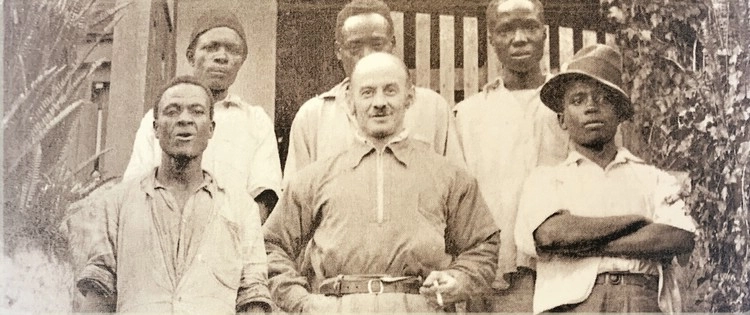
From time to time, Reusch went on vacation to the USA to negotiate African missions and recruit new missionaries. He also lectured at Augustana College. All this active work initially earned him the title of honorary doctor of the Augustana Theological Seminary, and later American citizenship. In Africa, he managed to establish the first Lutheran mission in Machame on his own. Machame is a village near Moshi, where the second most popular route to the summit of Kilimanjaro begins after Marangu. By the way, our office — the Angelino Adventures expedition base — is located in Machame, on the grounds of the Aishi Machame Hotel.
In some sources, Richard Reusch is referred to as a spy, but it's unclear what exactly the authors mean. Perhaps they are referring to the fact that, while living in Tanganyika in the 1930s-40s and traveling to various regions, Reusch reported to the British colonial government about farmers who sympathized with Nazi Germany. Reusch himself was a staunch anti-communist and opponent of Nazism. He also defended the rights of the indigenous people of Tanganyika, although he once sided with the colonists. In 1951, during a conflict between the colonial British administration and the people of Meru who were being evicted, he supported the former, resulting in a break in his friendly relations with the Augustana Synod. Three years later, he left Africa forever, moving to the United States. Just in the year of his departure, the inner crater on Kilimanjaro was named after him.
Books and the last travel
In total, Richard Reusch lived in Tanganyika for more than 30 years, occasionally taking vacations to the United States and neighboring countries, such as Uganda, where he also engaged in mountaineering. He is known to have participated in a rescue operation on Ruwenzori. While climbing Margherita Peak in 1938, a group of Italian climbers got into trouble, so an expedition was organized to rescue them. Reusch actively participated in it.
While living in Tanganyika, he also edited a church newspaper, translated the Bible into Swahili, and wrote various notes that were later published as full-fledged books. He began by writing theological articles in Swahili. However, the problem was that parishioners were illiterate, which is why he first had to establish a school. The second step was writing the "Short Grammar of Swahili" and simple textbooks.
Separate areas in Reusch's writings included the study of Maasai culture and lifestyle, as well as Islam. While his books on the lives of Muslims were published, his research on the lives and traditions of the Maasai remained manuscripts. They are stored in the archives of Gustavus Adolphus College and, according to those who have read them, are still of interest to ethnologists today.
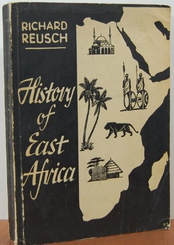
In 1931, Reusch published the popular book "Islam in East Africa," and in 1953, "I Lived Among Muslims." Later, after moving to America, Richard Reusch published his most famous book, "History of East Africa."
If you want to learn more about Richard Reusch, it is worth reading his biography, published in 2008. Titled "Loyalty: A Biography of Richard Gustavovich Reusch". It was authored by Daniel Johnson, who spoke with many people who personally knew Reusch. He visited many places in Tanzania where the missionary lived. If you cannot read the entire book, there is a seven-page summary available. A collection of passages from the book about Reusch can be found on the archive site of the now-defunct Augustana Heritage Association.
What happened to Reusch after his life in Africa? In Minnesota, he continued to serve as a pastor in a Lutheran church for another 10 years and taught at Gustavus Adolphus College in St. Peter. His last expedition took place at the age of 79 when he climbed Mount Sinai, which is significant for Christians. He died in the USA at the age of 84. His wife, Elveda Bonander (Reusch), passed away two years later. Their shared tombstone features the silhouette of the African continent, which connected their destinies and was their home for 31 years.
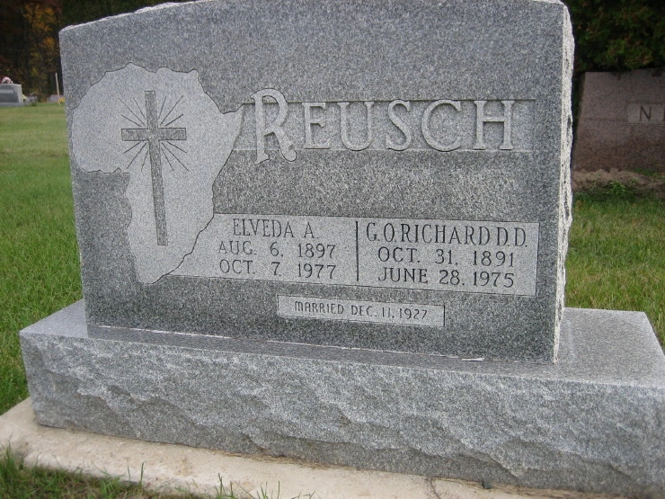
How to visit the Reusch Crater?
You can see the Reusch Crater during an expedition to Kilimanjaro with a planned descent into the crater. If you plan to climb and want to join us, please inform us in advance of your desire to see the Reusch Crater. We will prepare the expedition program and brief the guides. For more details on why choose to climb Kilimanjaro with Angelino Adventures, check out our blog.
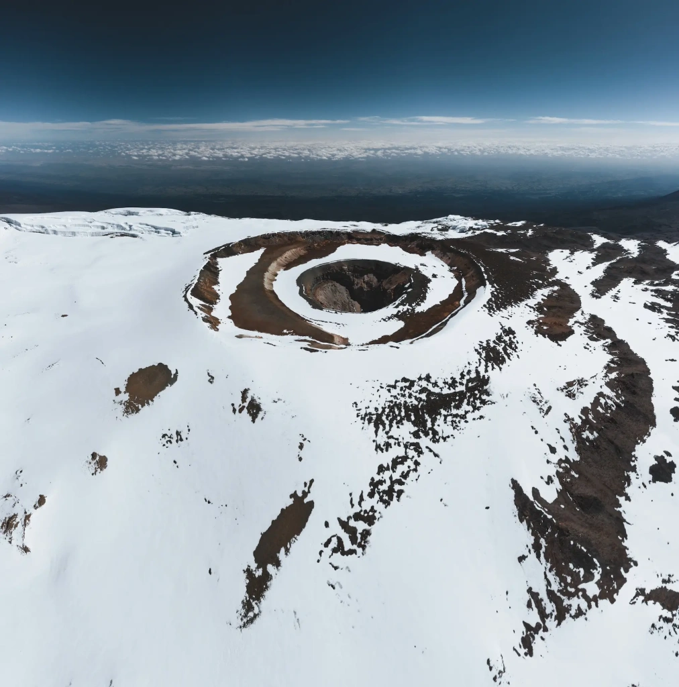
Can you visit the Reusch Crater without an overnight expedition in the crater, choosing one of the popular routes ending with a visit to Uhuru Peak? Yes, during any expedition, after reaching Uhuru Peak, you can descend to the Furtwängler Glacier and then reach the Reusch Crater. The return path then leads directly to Stella Point without returning to Uhuru. The hike to the crater adds two hours to the standard transition time for that day.
All content on Angelino Adventures is created with expert insights and thorough research, in line with our Editorial Policy.


Want to know more about Tanzania adventures?
Get in touch with our team! We've explored all the top destinations across Tanzania. Our Kilimanjaro-based adventure consultants are ready to share tips and help you plan your unforgettable journey.
 Tanzania Safaris
Tanzania Safaris
 Kilimanjaro and other mountains
Kilimanjaro and other mountains
 About Angelino Adventures
About Angelino Adventures
 About Tanzania
About Tanzania